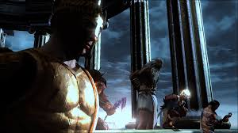
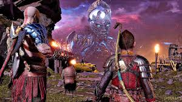

Panteón Griego
El panteón griego fue el primero que Kratos enfrentó en su búsqueda de venganza. Ares, el dios de la guerra, fue quien engañó a Kratos para que matara a su propia familia, desatando la cadena de eventos que llevaría a la destrucción del Olimpo. Zeus, padre de Kratos y rey de los dioses, representaba la autoridad y tiranía que Kratos buscaba derrocar. Otros dioses importantes incluyen a Atenea, quien actuó como guía y consejera; Poseidón, dios de los mares; Hades, señor del Inframundo; y Hermes, el mensajero veloz.
La relación de Kratos con los dioses griegos estuvo marcada por la traición, la manipulación y la venganza. Aunque inicialmente sirvió fielmente a los dioses, descubrió que eran tan corruptos y egoístas como los mortales a quienes gobernaban. Cada dios que enfrentó representaba un aspecto diferente del poder divino y de la naturaleza humana, culminando en el enfrentamiento final contra Zeus que llevó a la destrucción completa del Olimpo griego.
Panteón Nórdico
En los reinos nórdicos, Kratos se encuentra con un nuevo panteón de dioses marcado por el fatalismo y la profecía del Ragnarok. Odín, el Padre de Todos, es el gobernante supremo obsesionado con evitar su destino y acumular conocimiento. Thor, dios del trueno e hijo de Odín, es un guerrero brutal que busca venganza por la muerte de sus hijos. Freya, inicialmente aliada de Kratos, se revela como la anterior reina de las valkirias y madre de Baldur.
A diferencia de los dioses griegos, los nórdicos están atrapados por las profecías del Ragnarok y sus destinos predeterminados. Baldur, el primer dios nórdico que Kratos enfrenta, estaba maldito con la invulnerabilidad pero incapaz de sentir cualquier sensación. Tyr, el dios de la guerra nórdico, representa la sabiduría y la diplomacia ausente en Odín. Estos dioses presentan desafíos diferentes para Kratos, quien ahora busca evitar conflictos en lugar de iniciarlos.

El Panteón Griego que Kratos destruyó
El Panteón Nórdico y el Ragnarok